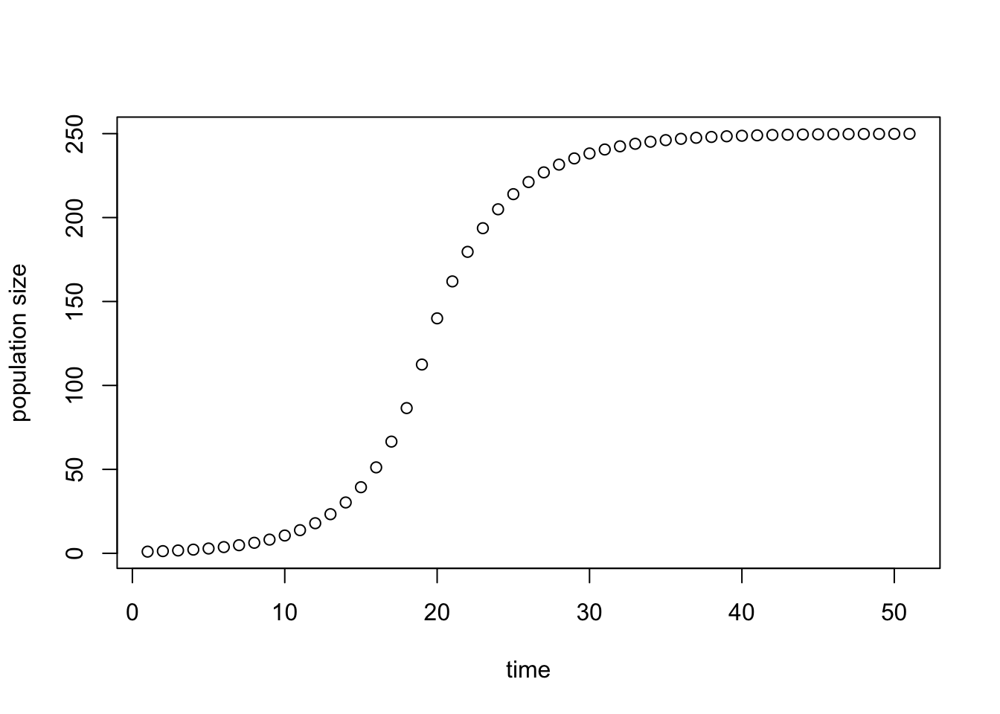
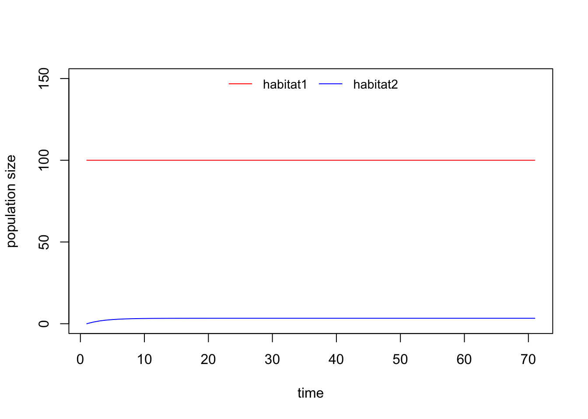
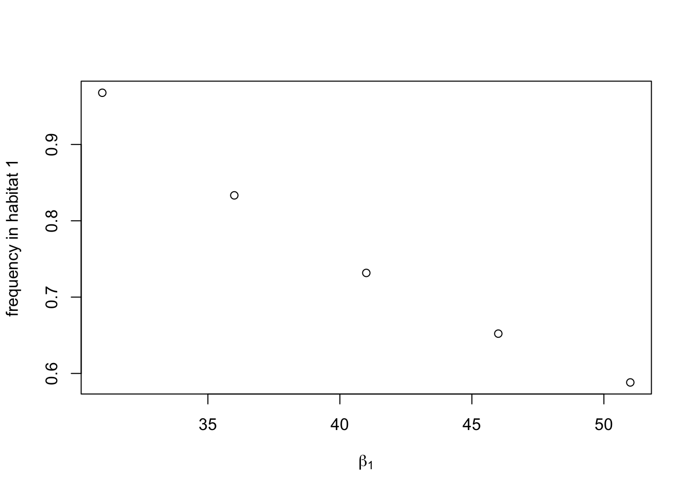
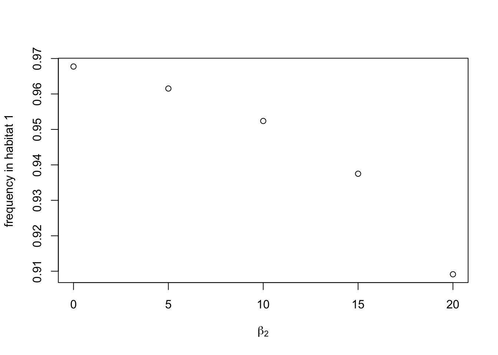

In this exercise, we reanalyze the model by Pulliam (1988, The American Naturalist 132:652-661). My code is inspired by Chapter 4 of the book A Primer of Ecology with R (2009) by M. Henry H. Stevens that analyzes this model using the framework of population projection matrices that you got to know when studying structured populations. I recommend Stevens’ book if you are interested in getting more deeply into ecological modelling with R. The book is available from the Uppsala University Library as a pdf. Note that in order to access the book from the library you have to be logged into the UU network.
So far, we have only considered closed populations. In contrast, one could imagine a population governed by births plus immigration, and deaths plus emigration (a BIDE model). Ron Pulliam (1988) proposed a simple model that includes all four components of BIDE to investigate the dynamics of a single species occupying habitats of different quality and where individuals can disperse between habitats. This can give rise to source-sink dynamics.
The general idea of source-sink populations is that spatially separated subpopulations that together form a meta-population, occupy distinct habitats with different intrinisic dynamics due to births and deaths. Thus, the population dynamics in each habitat is goverened by its own growth factor \(\lambda\). In addition, individuals can immigrate and emigrate from one habitat (or subpopulation) to another. Therefore, the number of individuals we observe in a particular habitat is not only due to the habitat specific \(\lambda\), but also due to the amount of immigration \(I\) and emigration \(E\). Assuming two habitats and a pre-breeding census (we count only adult individuals just before reproduction takes place) we can write general discrete time recursions for the dynamics as follows,
\[ \begin{align} N_1(t+1)&=N_1(t)\lambda_1 + I_1 - E_1\\ N_2(t+1)&=N_2(t)\lambda_2 + I_2 - E_2. \end{align} \]
Subpopulations with more births than deaths (\(\lambda > 1\)), and with more emigration than immigration (\(E > I\)), are referred to as source populations. Subpopulations with fewer births than deaths (\(\lambda < 1\)), and with more immigration than emigration (\(I > E\)) are referred to as sink populations.
Next, let us be more specific about \(\lambda_i\), \(I_i\) and \(E_i\). We follow the populations with a pre-breeding census, that is, we count adults just before reproduction takes place. See figure 1 in Pulliam (1988) for the considered life cycle. Adults in habitat \(i\) produce \(\beta_i\) offspring, which survive with probability \(P_J\) to the next census. After reproduction, adults survive until the next census with probability \(P_A\). If we assume that the two habitats only differ in the number of offspring adults can produce, then we can write the habitat specific growth factors \(\lambda_i\) as
\[ \begin{align} \lambda_1 &= \beta_1 P_J+ P_A\\ \lambda_2 &= \beta_2 P_J+ P_A. \end{align} \]
Follwing Pulliam, we assume that habitat 1 is a source (\(\lambda_1>1\)) while habitat 2 is a sink (\(\lambda_2<1\)). Furthermore, we assume that each habitat allows for a fixed maximal number of territories and only individuals with territories are able to reproduce. For habitat 1 we denote this maximal number of territories with \(k\) (Pulliam’s \(\hat n\)). If \(n_1>k\) individuals occupy habitat 1, then the probability for an individual to obtain a territory equals \(k/n_1\). Thus, the expected number of offspring per individual depends on population size in the following manner,
\[ \beta(n_1)= \begin{cases} \beta_1 \quad &\text{if} \,\, n_1 < k\\ \beta_1\frac{k}{n_1} \quad &\text{if} \,\, n_1 > k. \\ \end{cases} \]
Thus, without emigration the population dynamics in habitat 1 are given by
\[ n_1(t+1) = n_1(t)[\beta(n_1(t))P_J+P_A] \]
We can program the piecewise defined function \(\beta(n)\) in R as
beta <- function (n1) {
if (n1 < k) {beta1}
else {beta1*k/n1}
}Let’s test this function. Convince yourself that the result is correct.
k <- 100
beta1 <- 50
beta(13) # this gives the value of beta given n1=13## [1] 50beta(200) # this gives the value of beta given n1=200## [1] 25Let us investigate the population dynamics in habitat 1 under the assumption that there is no emigration. We start by writing a function that gives the population size one time step into the future as a function of the populatin size now.
nextpop <- function(n1){
n1*(beta(n1)*PJ+PA)
}Let’s test this function.
PJ <- 0.01
PA <- 0.8
nextpop(10)## [1] 13Let us now iterate this function to produce a time series. This can be done elegantly in the following manner.
timeseries <- function(n0, maxtime) {# defines a function called "time series" with arguments n0 and maxtime
out <- rep(n0, maxtime + 1) # creates a vector in which the time series will be stored
for (i in seq_len(maxtime)) out[i+1] <- nextpop(out[i]) # iterates the function in a for-loop
out # gives the result
}
example <- timeseries(1, 50) # applies our new function assuming n0=1 for 50 time steps
plot(example, ylab = "population size", xlab = "time") # plot of the time series
Oh wou, this looks like logistic growth. But is it really? Anyway, it seems the population reaches an equilibrium \(n_1^*\). Pulliam (1988) derives the value of this equilibrium analytically (his equation (7)). Compare your simulation result with his formula. For this you have to compare the population size at the end of your simulation with the values the Pulliam’s equation (7) produces if you plug your parameter values into his equation. Vary your parameters to check whether your equilibrium number still agrees with Pulliam’s formula.
Using our notation, Pulliam’s formula reads \[ n_1^* = k\frac{P_J\beta_1}{1-P_A}. \] Using for example the parameters from above (\(k=100\), \(\beta_1=50\), \(P_J=0.01\), \(P_A=0.8\)) we find \(n_1^*= 250\), which agrees exactly with the result of our simulations. The same holds true for other parameter values.
Next, we add migration to this model. Specifically, we assume that all adult individuals in habitat 1 that do not manage to obtain a territory migrate into the rather empty habitat 2. This strategy is adaptive for individuals that do not obtain a territory in habitat 1 despite the fact that \(\lambda<1\), because little reproduction is better than no reproduction. This results in the population size in habitat 1 to be equal to the number of territories, \(n_1^*=k\). With this assumption the emigration \(E_1\) from habitat 1 to 2 and the immigration \(I_2\) into habitat 2 from habitat 1 is given by
\[ E_1 = I_2 = k(\beta_1 P_J + P_A) - k = k(\lambda_1 - 1). \]
We can now write the the population dynamics in the two habitats as a system of two coupled difference equations.
\[ \begin{align} k&=k(\beta_1P_J + P_A) - I_{21} = k \lambda_1-k(\lambda_1-1) = k\\ n_2(t+1)&=n_2(t)(\beta_2P_J + P_A) + I_{21} = n_2(t)\lambda_2 + k(\lambda_1 - 1) \end{align} \]
We can write these equations in matrix notation and use the tools that we learned when we investigated structured populations. In fact, this is a structured population but it is not structured with respect to age or size but with respect to space.
\[ \begin{pmatrix} n_1(t+1)\\ n_2(t+1) \end{pmatrix} =\begin{pmatrix} k\\ n_2(t+1) \end{pmatrix} = \begin{pmatrix} 1 & 0\\ \lambda_1-1 & \lambda_2 \end{pmatrix} \begin{pmatrix} k\\ n_2(t) \end{pmatrix} \]
The main question we want to answer with this model is the following: How are the individuals in the population distributed over the two habitats? Specifically, how does the answer to this question depends on the reproductive factors \(\lambda_1\) and \(\lambda_2\) in the two habitats?
Let us start by defining the parameter values.
PA <- 0.7
PJ <- 0.01
beta1 <- 31
beta2 <- 0
(l1 <- PA + PJ*beta1) # check whether lambda_1>1, this has to be true otherwise habitat 1 is not a source## [1] 1.01(l2 <- PA + PJ*beta2) # check whether lambda_2<1, this has to be true otherwise habitat 2 is not a sink## [1] 0.7n0 <- c(k, 0) # vector of intitial population densities. Note that the population size in habitat 1 is assumed to have reached carrying capacityNext, let us define the population projection matrix in R and a function that allows us to project the population vector one time step into the future.
tr.mat <- matrix(c(1, 0, PA + PJ*beta1-1, PA + PJ*beta2), nrow = 2, byrow = TRUE) # transition matrix
nextpop2dim <- function(n){ # population vector at the next time step obtained by mulitplying matrix with current populatin vector
tr.mat%*%n
}
nextpop2dim(n0) # let's test our new function## [,1]
## [1,] 100
## [2,] 1Finally, let produce a timeseries based our population projection matrix.
timeseries <- function(n0, maxtime) {# defines a function called "time series" with arguments n0 and maxtime
out <- matrix(c(rep(n0[1], maxtime+1), rep(n0[2], maxtime+1)), nrow = 2, byrow = TRUE) # creates a vector in which the time series is stored
for (i in seq_len(maxtime)) out[,i+1] <- nextpop2dim(out[,i]) # iterates the function in a for-loop for "maxtime" time steps
out # gives the result
}
maxtime <- 70
data <- timeseries(n0, maxtime) # applies the function
plot(data[1,], type = 'l', ylab = "population size", xlab = "time", col="red", ylim = c(0,150)) # plots the number of individuals in habitat 1
lines(data[2,], col="blue", type='l') # plots the number of individuals in habitat 2
legend("top", legend=c("habitat1", "habitat2"), col=c("red", "blue"), lty=c(1,1), bty="n", horiz=TRUE, cex=0.9)
We are interested in the equilibrium densities, i.e., the final values of the time series, and the proportions of individuals in the two habitats. The equilibrium proportions are given by
\[ \begin{align} p_1^*&=\frac{n_1^*}{n_1^*+n_2^*}\\ p_2^*&=\frac{n_2^*}{n_1^*+n_2^*}, \end{align} \]
and we can compute them as follows
# Proportion in habitat 1
data[,maxtime+1] # final population vector in our time series## [1] 100.000000 3.333333data[1, maxtime+1]/(sum(data[, maxtime+1])) # proportion of individuals occupying the source habitat## [1] 0.9677419# Proportion in habitat 2
data[, maxtime+1] # final population vector in our time series## [1] 100.000000 3.333333data[2, maxtime+1]/(sum(data[, maxtime+1])) # proportion of individuals occupying the sink habitat## [1] 0.03225806With this code at hand, please address the following questions:
Below, we plot the frequency of individuals occupying habitat 1 for five different values of the frecundity in habitat 1, namely, \(\beta_1=31, 36, 41, 46, 51\). We see that the frequency of individuals in habitat 1 is a monotonically decreasing function of the fecundity in habitat 1. This may sound paradoxically: the higher the fecundity, the lower the proportion of individuals occupying the habitat. The reason is that the increased fecundity exclusively benefits habitat 2, the sink habitat, due to an increased production of individuals emigrating from the source to the sink.
beta1 <- 31
tr.mat <- matrix(c(1, 0, PA + PJ*beta1-1, PA + PJ*beta2), nrow = 2, byrow = TRUE)
(l1 <- PA + PJ*beta1) # check whether lambda_1>1, this has to be true otherwise habitat 1 is not a source## [1] 1.01(l2 <- PA + PJ*beta2) # check whether lambda_2<1, this has to be true otherwise habitat 2 is not a sink## [1] 0.7data.1 <- timeseries(n0, maxtime) # applies the function
freq.1 <- data.1[1,maxtime+1]/(sum(data.1[,maxtime+1])) # proportion of individuals occupying the source
beta1 <- 36
tr.mat <- matrix(c(1, 0, PA + PJ*beta1-1, PA + PJ*beta2), nrow = 2, byrow = TRUE)
(l1 <- PA + PJ*beta1) # check whether lambda_1>1, this has to be true otherwise habitat 1 is not a source## [1] 1.06(l2 <- PA + PJ*beta2) # check whether lambda_2<1, this has to be true otherwise habitat 2 is not a sink## [1] 0.7data.2 <- timeseries(n0, maxtime) # applies the function
freq.2 <- data.2[1,maxtime+1]/(sum(data.2[,maxtime+1])) # proportion of individuals occupying the source
beta1 <- 41
tr.mat <- matrix(c(1, 0, PA + PJ*beta1-1, PA + PJ*beta2), nrow = 2, byrow = TRUE)
(l1 <- PA + PJ*beta1) # check whether lambda_1>1, this has to be true otherwise habitat 1 is not a source## [1] 1.11(l2 <- PA + PJ*beta2) # check whether lambda_2<1, this has to be true otherwise habitat 2 is not a sink## [1] 0.7data.3 <- timeseries(n0, maxtime) # applies the function
freq.3 <- data.3[1,maxtime+1]/(sum(data.3[,maxtime+1])) # proportion of individuals occupying the source
beta1 <- 46
tr.mat <- matrix(c(1, 0, PA + PJ*beta1-1, PA + PJ*beta2), nrow = 2, byrow = TRUE)
(l1 <- PA + PJ*beta1) # check whether lambda_1>1, this has to be true otherwise habitat 1 is not a source## [1] 1.16(l2 <- PA + PJ*beta2) # check whether lambda_2<1, this has to be true otherwise habitat 2 is not a sink## [1] 0.7data.4 <- timeseries(n0, maxtime) # applies the function
freq.4 <- data.4[1,maxtime+1]/(sum(data.4[,maxtime+1])) # proportion of individuals occupying the source
beta1 <- 51
tr.mat <- matrix(c(1, 0, PA + PJ*beta1-1, PA + PJ*beta2), nrow = 2, byrow = TRUE)
(l1 <- PA + PJ*beta1) # check whether lambda_1>1, this has to be true otherwise habitat 1 is not a source## [1] 1.21(l2 <- PA + PJ*beta2) # check whether lambda_2<1, this has to be true otherwise habitat 2 is not a sink## [1] 0.7data.5 <- timeseries(n0, maxtime) # applies the function
freq.5 <- data.5[1,maxtime+1]/(sum(data.5[,maxtime+1])) # proportion of individuals occupying the source
freqs <- c(freq.1, freq.2, freq.3, freq.4, freq.5)
beta1s <- c(31, 36, 41, 46, 51)
plot(beta1s, freqs, ylab = "frequency in habitat 1", xlab = expression(beta[1]))
Below, we plot the frequency of individuals occupying habitat 1 for five different values of the frecundity in habitat 2, namely, \(\beta_2=0, 5, 10, 15, 20\). We see that the frequency of individuals in habitat 1 is a monotonically decreasing function of the fecundity in habitat 2. Note that with all of the above values of \(\beta_2\) habitat 2 remains a sink. But increasing the fecundity in the sink makes the sink less severe and therefore increases the proportion of individuals occupying the sink habitat.
beta1 <- 31
beta2 <- 0
tr.mat <- matrix(c(1, 0, PA + PJ*beta1-1, PA + PJ*beta2), nrow = 2, byrow = TRUE)
(l1 <- PA + PJ*beta1) # check whether lambda_1>1, this has to be true otherwise habitat 1 is not a source## [1] 1.01(l2 <- PA + PJ*beta2) # check whether lambda_2<1, this has to be true otherwise habitat 2 is not a sink## [1] 0.7data.1 <- timeseries(n0, maxtime) # applies the function
freq.1 <- data.1[1,maxtime+1]/(sum(data.1[,maxtime+1])) # proportion of individuals occupying the source
freq.1## [1] 0.9677419data.1[1,maxtime+1]## [1] 100sum(data.1[,maxtime+1])## [1] 103.3333data.1[,maxtime+1]## [1] 100.000000 3.333333beta2 <- 5
tr.mat <- matrix(c(1, 0, PA + PJ*beta1-1, PA + PJ*beta2), nrow = 2, byrow = TRUE)
(l1 <- PA + PJ*beta1) # check whether lambda_1>1, this has to be true otherwise habitat 1 is not a source## [1] 1.01(l2 <- PA + PJ*beta2) # check whether lambda_2<1, this has to be true otherwise habitat 2 is not a sink## [1] 0.75data.2 <- timeseries(n0, maxtime) # applies the function
freq.2 <- data.2[1,maxtime+1]/(sum(data.2[,maxtime+1])) # proportion of individuals occupying the source
beta2 <- 10
tr.mat <- matrix(c(1, 0, PA + PJ*beta1-1, PA + PJ*beta2), nrow = 2, byrow = TRUE)
(l1 <- PA + PJ*beta1) # check whether lambda_1>1, this has to be true otherwise habitat 1 is not a source## [1] 1.01(l2 <- PA + PJ*beta2) # check whether lambda_2<1, this has to be true otherwise habitat 2 is not a sink## [1] 0.8data.3 <- timeseries(n0, maxtime) # applies the function
freq.3 <- data.3[1,maxtime+1]/(sum(data.3[,maxtime+1])) # proportion of individuals occupying the source
beta2 <- 15
tr.mat <- matrix(c(1, 0, PA + PJ*beta1-1, PA + PJ*beta2), nrow = 2, byrow = TRUE)
(l1 <- PA + PJ*beta1) # check whether lambda_1>1, this has to be true otherwise habitat 1 is not a source## [1] 1.01(l2 <- PA + PJ*beta2) # check whether lambda_2<1, this has to be true otherwise habitat 2 is not a sink## [1] 0.85data.4 <- timeseries(n0, maxtime) # applies the function
freq.4 <- data.4[1,maxtime+1]/(sum(data.4[,maxtime+1])) # proportion of individuals occupying the source
beta2 <- 20
tr.mat <- matrix(c(1, 0, PA + PJ*beta1-1, PA + PJ*beta2), nrow = 2, byrow = TRUE)
(l1 <- PA + PJ*beta1) # check whether lambda_1>1, this has to be true otherwise habitat 1 is not a source## [1] 1.01(l2 <- PA + PJ*beta2) # check whether lambda_2<1, this has to be true otherwise habitat 2 is not a sink## [1] 0.9data.5 <- timeseries(n0, maxtime) # applies the function
freq.5 <- data.5[1,maxtime+1]/(sum(data.5[,maxtime+1])) # proportion of individuals occupying the source
freqs <- c(freq.1, freq.2, freq.3, freq.4, freq.5)
beta1s <- c(0, 5, 10, 15, 20)
plot(beta1s, freqs, ylab = "frequency in habitat 1", xlab = expression(beta[2]))
Your personal answer.
Your personal answer.
Your personal answer.